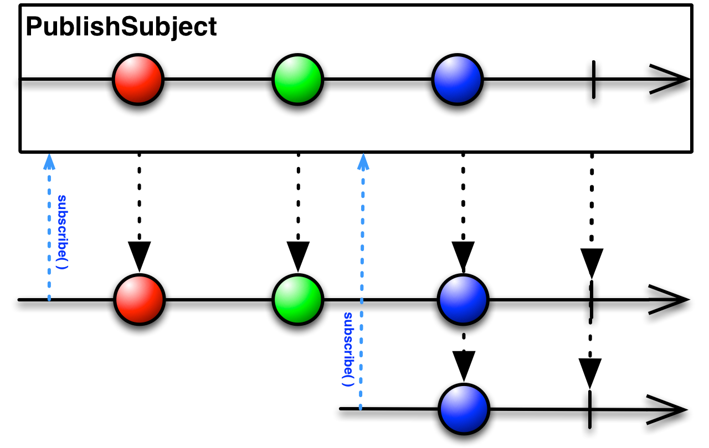

RxBus学习
2016年7月19日
近期有在研究一个开源项目，发现有用到RxBus。正好顺便学习一下RxJava的进阶使用，特此记录如下：
简单实现
首先我们需要创建一个RxBus.java
|
|
Subject对象，既是一个Observable，又是一个Observer, 我们可以把Subject理解为一个管道，数据从一端输入，然后从另一端输出。PublishSubject对象是Subject的一个子类, 其只会把在订阅发生的时间点之后来自原始Observable的数据发射给观察者。

post方法为发布一个Event对象给bus, 然后通过bus转发给订阅者（Observer）.toObservable方法为能够过滤一个对应事件类型，返回一个Observable，然后订阅者可以完成相关的相应事件。
具体应用
|
|
CompositeSubscription是一个用于存储Subscription的集合，方便用于解除订阅（一起）。